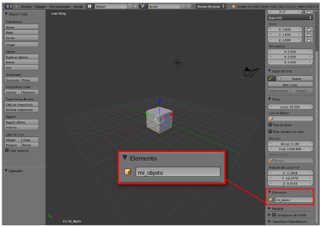
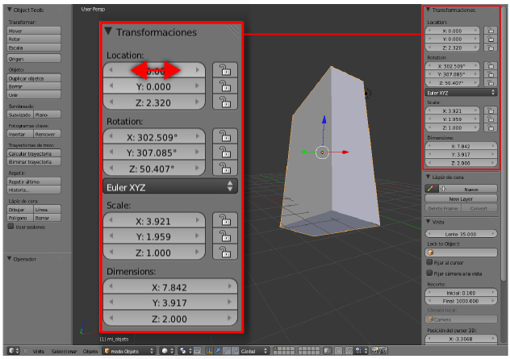

Propiedades y Herramientas
El cuadro Propiedades ("N") incluye información muy importante de la que, de momento, sólo vamos a destacar:
- Botonera Elemento. Es el mejor lugar para darle nombre al objeto seleccionado.

- Botonera Transformaciones. Aquí queda constancia del valor de cada transformación geométrica elemental (escala, movimiento, giro) así como de cada variación de tamaño en el objeto. No es habitual editar desde aquí salvo que trabajemos con medidas reales pero, ya que estamos, es interesante pararse a editar alguno de estos campos y ver su efecto en el editor Vista 3D. Para editar uno de estos campos con flechas a los lados, podemos acceder con clic de ratón o mover horizontalmente como si fuera una barra deslizadora. Tras unas cuantas ediciones este es el aspecto de nuestro cubo, que ahora se llama mi_objeto.

Del cuadro de Herramientas ("T") ahora sólo nos interesa fijarnos en que muchos de los botones hacen referencia a acciones como Duplicar objetos, Borrar, Rotar...Si probamos esta última edición los valores en el cuadro Propiedades ("N") varían en tiempo real.